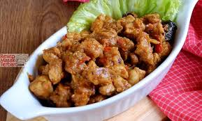

N A S U P A L E K K O

Selanjutnya anda perlu untuk mencicipi makanan yang sering disebut dengan
Nasu Palekko oleh masyarakat Sulawesi Selatan. Nasu Palekko ini biasanya
dibuat dengan bahan dasar daging bebek namun ada juga yang terbuat dari
daging sapi. Daging dari makanan ini
dimasak dengan sempurna sehingga daging begitu empuk serta bumbunya begitu
meresap.
Jika anda mencicipi menu ini mungkin saja anda akan langsung teringat
dengan masakan khas padang yakni rendang karena memang bumbunya begitu
meresap dan dagingnya sangat empuk.
Berikut ini bahan-bahan dan cara pembuatannya:
-
- 1 ekor bebek
- 1 buah jeruk nipis
- 1 ruas sereh geprek
- Asam Jawa
- 8 siung bawang putih
- 10 siung bawang merah
- 7 buah cabe merah keriting(sesuai selera)
- 20 buah cabe rawit merah(sesuai selera)
- 10 cabe hijau(sesuai selera)
- 2 buah kemiri
- 3cm jahe
- 3cm kunyit
- 1 ruas sereh
- 3cm laos
- 1 sendok makan merica
-
- Potong kotak bebek kurang lebih 3 cm beserta tulang
- Cuci bersih,peras jeruk nipis pada bebek,diamkan 10 menit
- Sambil menunggu bebek,blender semua bumbu halus
- Setelah halus lalu tumis bumbu sampai harum,kemudian masukan sereh geprek tadi aduk sampai harum lagi
- Kemudian masukkan bebek yang sudah dipotong potong aduk sampe bumbu meresap
- Diamkan 5 menit,sambil menunggu bikin air asam dengan air 1 liter,lalu peras asam jawa
- Setelah bebek mendidih masukkan air asamnya,aduk merata dan masukan garam,(penyedap) koreksi rasa.
- Masak bebek sampai kering,kembali koreksi rasa,lalu sajikan.
Kembali Ke Atas